From projections to data management to spatial analysis, we have up to now focused on the more technical points of a geographic information system (GIS). This chapter is concerned less with the computational options available to the GIS user and more with the artistic options. In essence, this chapter shifts the focus away from GIS tools and toward cartographic tools, although the two are becoming more and more inextricably bound. Unfortunately, many GIS users are never exposed to the field of cartographyThe discipline concerned with the conception, production, dissemination, and study of maps in all forms.. In these cases, the hard work of creating, maintaining, aligning, and analyzing complex spatial datasets are not truly appreciated as the final mapping product may not adequately communicate this information to the consumer. In addition, maps, like statistics, can be used to distort information, as illustrated by Mark Monmonier’s (1996)Monmonier, M. 1996. How to Lie with Maps. 2nd ed. Chicago: University of Chicago Press. book titled How to Lie with Maps. Indeed, a strong working knowledge of cartographic rules will not only assist in the avoidance of potential misrepresentation of spatial information but also enhance one’s ability to identify these indiscretions in other cartographers’ creations. The cartographic principles discussed herein are laid out to guide GIS users through the process of transforming accumulated bits of GIS data into attractive, usefulmaps for print and display. This discussion specifically addresses the intricacies of effective color usage (Section 9.1 "Color"), symbol selection (Section 9.2 "Symbology"), and map layout and design (Section 9.3 "Cartographic Design").
Although a high-quality map is composed of many different elements, color is one of the first components noticed by end-users. This is partially due to the fact that we each have an intuitive understanding of how colors are, and should be, used to create an effective and pleasing visual experience. Nevertheless, it is not always clear to the map-maker which colors should be used to best convey the purpose of the product. This intuition is much like listening to our favorite music. We know when a note is in tune or out of tune, but we wouldn’t necessarily have any idea of how to fix a bad note. Color is indeed a tricky piece of the cartographic puzzle and is not surprisingly the most frequently criticized variable on computer-generated maps (Monmonier 1996).Monmonier, M. 1996. How to Lie with Maps. 2nd ed. Chicago: University of Chicago Press. This section attempts to outline the basic components of color and the guidelines to most effectively employ this important map attribute.
As electromagnetic radiation (ER) travels via waves from the sun (or a lightbulb) to objects on the earth, portions of the ER spectrum are absorbed, scattered, or reflected by various objects. The resulting property of the absorbed, scattered, and reflected ER is termed “color.” White is the color resulting from the full range of the visual spectrum and is therefore considered the benchmark color by which all others are measured. Black is the absence of ER. All other colors result from a partial interaction with the ER spectrum.
The three primary aspects of color that must be addressed in map making are hue, value, and saturation. HueThe dominant wavelength or color associated with a reflecting object. is the dominant wavelength or color associated with a reflecting object. Hue is the most basic component of color and includes red, blue, yellow, purple, and so forth. ValueThe amount of white or black in the color. is the amount of white or black in the color. Value is often synonymous with contrast. Variations in the amount of value for a given hue result in varying degrees of lightness or darkness for that color. Lighter colors are said to possess high value, while dark colors possess low value. Monochrome colors are groups of colors with the same hue but with incremental variations in value. As seen in Figure 9.1 "Value", variations in value will typically lead the viewer’s eye from dark areas to light areas.
Figure 9.1 Value
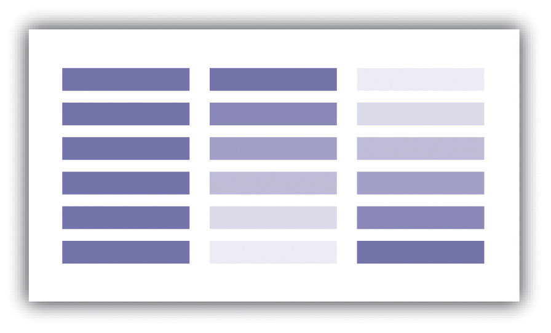SaturationThe intensity of color. describes the intensity of color. Full saturation results in pure colors, while low saturation colors approach gray. Variations in saturation yield different shades and tints. ShadesGray-toned colors produced by adding black to the original hue. are produced by blocking light, such as by an umbrella, tree, curtain, and so forth. Increasing the amount of shading results in grays and blacks. TintColors produced by adding white to the original hue. is the opposite of shade and is produced by adding white to a color. Tints and shades are particularly germane when using additive color models (see Section 9.1.2 "Color Models" for more on additive color models). To maximize the interpretability of a map, use saturated colors to represent hierarchically prominent features and washed-out colors to represent background features.
If used properly, color can greatly enhance and support map design. Likewise, color can detract from a mapping product if abused. To use color properly, one must first consider the purpose of the map. In some cases, the use of color is not warranted. Grayscale maps can be just as effective as color maps if the subject matter merits it. Regardless, there are many reasons to use color. The five primary reasons are outlined here.
Color is particularly suited to convey meaning (Figure 9.2 "Use of Color to Provide Meaning"). For example, red is a strong color that evokes a passionate response in humans. Red has been shown to evoke physiological responses such as increasing the rate of respiration and raising blood pressure. Red is frequently associated with blood, war, violence, even love. On the other hand, blue is a color associated with calming effects. Associated with the sky or ocean, blue colors can actually assist in sleep and is therefore a recommended color for bedrooms. Too much blue, however, can result in a lapse from calming effects into feelings of depression (i.e., having the “blues”). Green is most commonly associated with life or nature (plants). The color green is certainly one of the most topical colors in today’s society with commonplace references to green construction, the Green party, going green, and so forth. Green, however, can also represent envy and inexperience (e.g., the green-eyed monster, greenhorn). Brown is also a nature color but more as a representation of earth and stone. Brown can also imply dullness. Yellow is most commonly associated with sunshine and warmth, somewhat similar to red. Yellow can also represent cowardice (e.g., yellow-bellied). Black, the absence of color, is possibly the most meaning-laden color in modern parlance. Even more than the others, the color black purports surprisingly strong positive and negative connotations. Black conveys mystery, elegance, and sophistication (e.g., a black-tie affair, in the black), while also conveying loss, evil, and negativity (e.g., blackout, black-hearted, black cloud, blacklist).
Figure 9.2 Use of Color to Provide Meaning
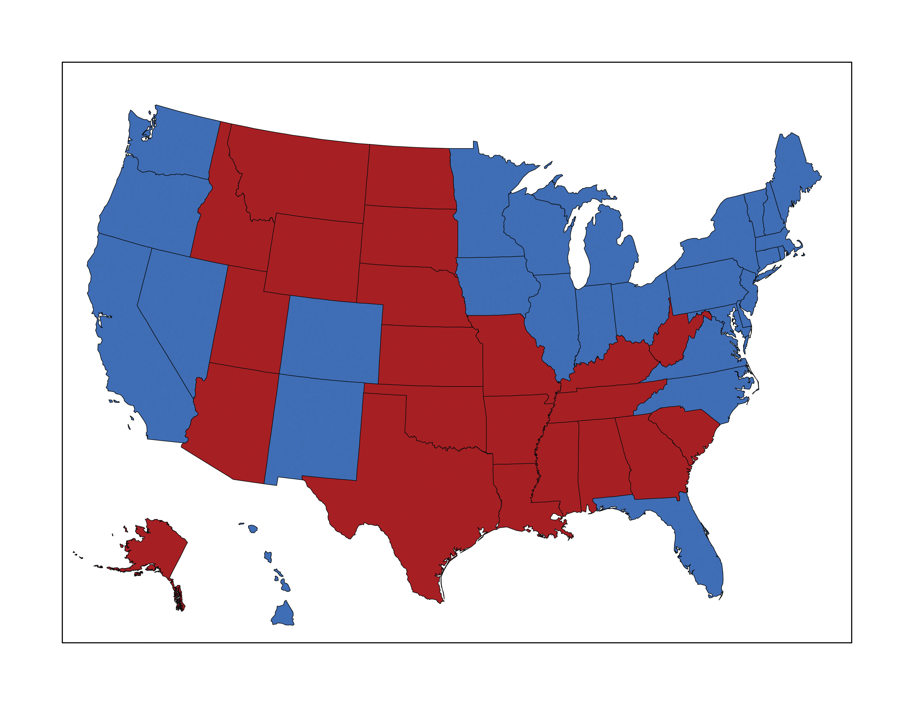In this map, red counties are those that voted for the Republican Party in the 2004 presidential election, while blue counties voted Democrat. These colors are typically used to designate the Democratic and Republican Parties.
The second reason to use color is for clarification and emphasis (Figure 9.3 "Use of Color to Provide Emphasis"). Warm colors, such as reds and yellows, are notable for emphasizing spatial features. These colors will often jump off the page and are usually the first to attract the reader’s eye, particularly if they are counterbalanced with cool colors, such as blues and greens (see Section 9.1.3 "Color Choices" for more on warm and cool colors). In addition, the use of a hue with high saturation will stand out starkly against similar hues of low saturation.
Figure 9.3 Use of Color to Provide Emphasis

Red marks the spot!
Color use is also important for creating a map with pleasing aesthetics (Figure 9.4 "Use of Color to Provide Aesthetics"). Certainly, one of the most challenging aspects of map creation is developing an effective color palette. When looking at maps through an aesthetic lens, we are truly starting to think of our creations as artwork. Although somewhat particular to individual viewers, we all have an innate understanding of when colors in a graphic/art are aesthetically pleasing and when they are not. For example, color use is considered harmonious when colors from opposite sides of the color wheel are used (Section 9.1.3 "Color Choices"), whereas equitable use of several major hues can create an unbalanced image.
Figure 9.4 Use of Color to Provide Aesthetics
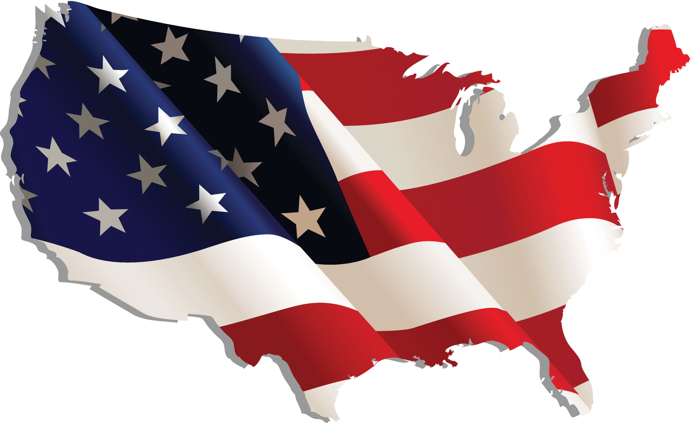The fourth use of color is abstraction (Figure 9.5 "Use of Color to Provide Abstraction"). Color abstraction is an effective way to illustrate quantitative and qualitative data, particularly for thematic products such as choropleth maps. Here, colors are used solely to denote different values for a variable and may not have any particular rhyme or reason. Figure 9.5 "Use of Color to Provide Abstraction" shows a typical thematic map with abstract colors representing different countries.
Figure 9.5 Use of Color to Provide Abstraction
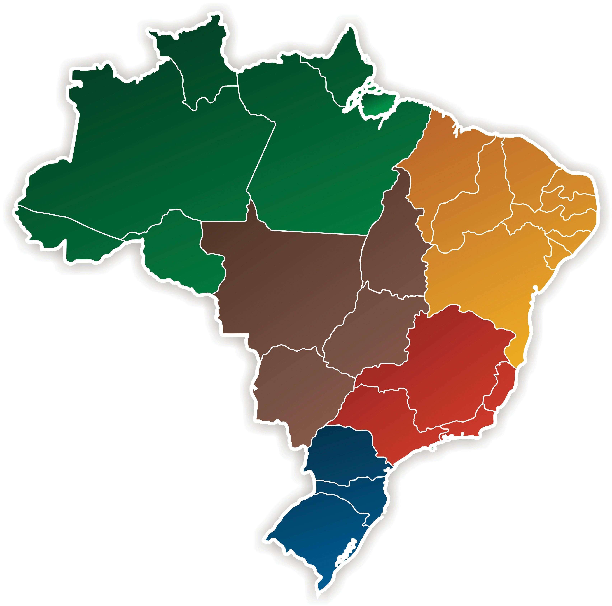Opposite abstraction, color can also be used to represent reality (Figure 9.6). Maps showing elevation (e.g., digital elevation models or DEMs) are often given false colors that approximate reality. Low areas are colored in variations of green to show areas of lush vegetation growth. Mid-elevations (or low-lying desert areas) are colored brown to show sparse vegetation growth. Mountain ridges and peaks are colored white to show accumulated snowfall. Watercourses and water bodies are colored blue. Unless there is a specific reason not to, natural phenomena represented on maps should always be colored to approximate their actual color to increase interpretability and to decrease confusion.
Figure 9.6
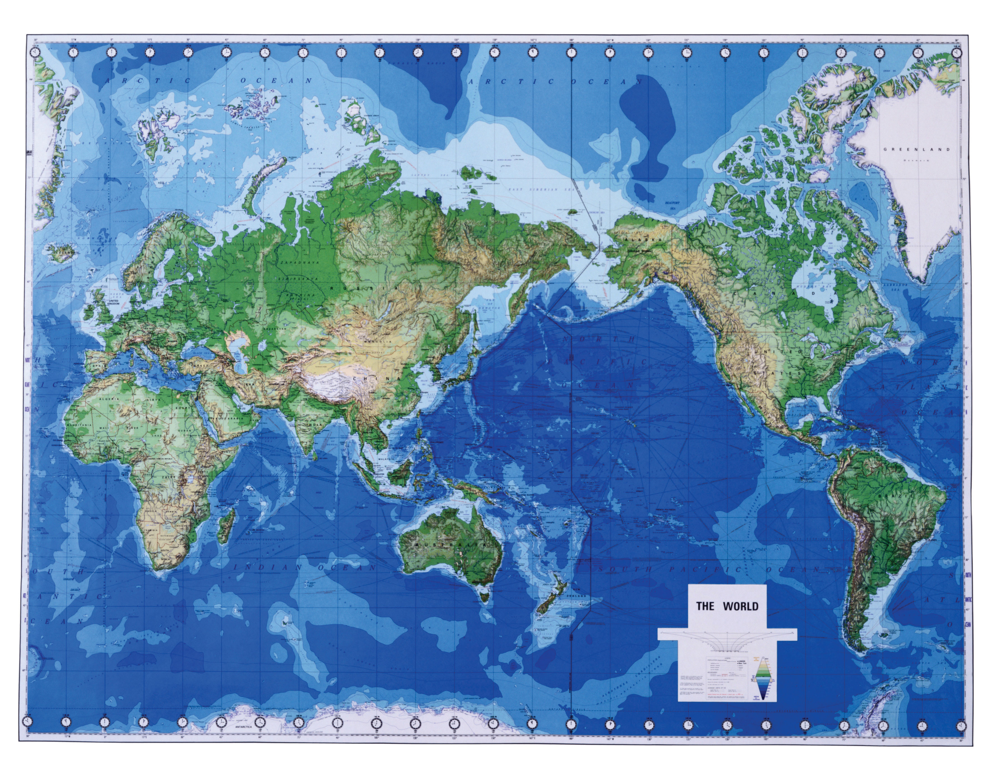Greens, blues, and browns are used to imitate real-world phenomena.
Color models are systems that allow for the creation of a range of colors from a short list of primary colors. Color models can be additive or subtractive. Additive color modelsColor models that combine emitted light to display color variations and are commonly used with computer monitors, televisions, scanners, digital cameras, and video projectors. combine emitted light to display color variations and are commonly used with computer monitors, televisions, scanners, digital cameras, and video projectors. The RGBThe red-green-blue color model. (red-green-blue) color model is the most common additive model (part (a) of Figure 9.7 "Additive Color Models: (a) RGB, (b) HSL, and (c) HSV"). The RGB model combines light beams of the primary hues of red, green, and blue to yield additive secondary hues of magenta, cyan, and yellow. Although there is a substantive difference between pure yellow light (~580 nm) and a mixture of green and red light, the human eye perceives these signals as the same. The RGB model typically employs three 8-bit numeric values (called an RGB triplet) ranging from 0 to 255 to model colors. For instance, the RGB triplets for the pure primary and secondary colors are as follows:
Two other common additive color models, based on the RGB model, are the HSLThe hue-saturation-lightness color model. (hue, saturation, lightness) and HSVThe hue-saturation-value color model. (hue, saturation, value) models (Figure 9.7 "Additive Color Models: (a) RGB, (b) HSL, and (c) HSV", b and c). These models are based on cylindrical coordinate systems whereby the angle around the central vertical axis corresponds to the hue; the distance from the central axis corresponds to saturation; and the distance along the central axis corresponds to either saturation or lightness. Because of their basis in the RGB model, both the HSL and HSV color models can be directly transformed between the three additive models. While these relatively simple additive models provide minimal computer-processing time, they do possess the disadvantage of glossing over some of the complexities of color. For example, the RGB color model does not define “absolute” color spaces, which connotes that these hues may look differently when viewed on different displays. Also, the RGB hues are not evenly spaced along the color spectrum, meaning combinations of the hues is less than exact.
Figure 9.7 Additive Color Models: (a) RGB, (b) HSL, and (c) HSV
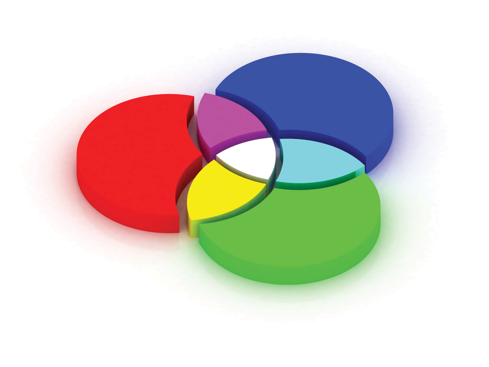In contrast to an additive model, subtractive color modelsColor models that involve the mixing of paints, dyes, or inks on a white page to create full color ranges. involve the mixing of paints, dyes, or inks to create full color ranges. These subtractive models display color on the assumption that white, ambient light is being scattered, absorbed, and reflected from the page by the printing inks. Subtractive models therefore create white by restricting ink from the print surface. As such, these models assume the use of white paper as other paper colors will result in skewed hues. CMYKThe cyan-magenta-yellow-black color model. (cyan, magenta, yellow, black) is the most common subtractive color model and is occasionally referred to as a “four-color process” (Figure 9.8 "Subtractive Color Model: CMYK"). Although the CMY inks are sufficient to create all of the colors of the subtractive rainbow, a black ink is included in this model as it is much cheaper than using a CMY mix for all blacks (black being the most commonly printed color) and because combining CMY often results in more of a dark brown hue. The CMYK model creates color values by entering percentages for each of the four colors ranging from 0 percent to 100 percent. For example, pure red is composed of 14 percent cyan, 100 percent magenta, 99 percent yellow, and 3 percent black.
As you may guess, additive models are the preferred choice when maps are to be displayed on a computer monitor, while subtractive models are preferred when printing. If in doubt, it is usually best to use the RGB model as this supports a larger percentage of the visible spectrum in comparison with the CMYK model. Once an image is converted from RGB to CMYK, the additional RGB information is irretrievably lost. If possible, collecting both RGB and CMYK versions of an image is ideal, particularly if your graphic is to be both printed and placed online. One last note, you will also want to be selective in your use of file formats for these color models. The JPEG and GIF graphic file formats are the best choice for RGB images, while the EPS and TIFF graphic file formats are preferred with printed CMYK images.
Figure 9.8 Subtractive Color Model: CMYK
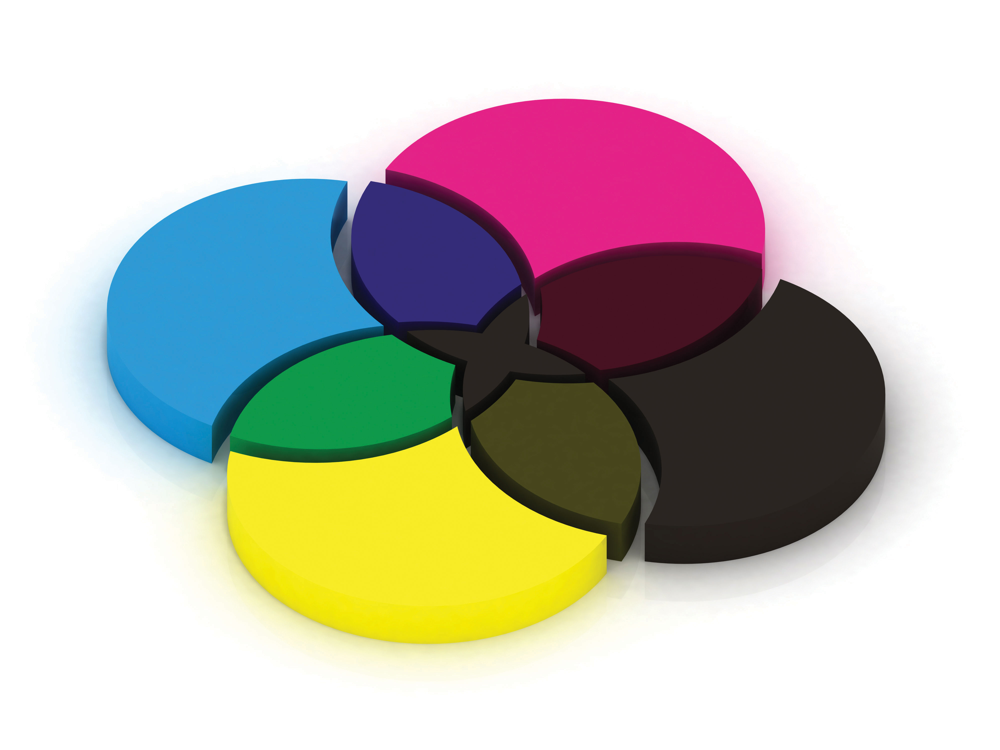Effective color usage requires a modicum of knowledge about the color wheel. Invented by Sir Isaac Newton in 1706, the color wheelA visual representation of colors arranged according to their chromatic relationships. is a visual representation of colors arranged according to their chromatic relationships. Primary hues are equidistant from each other with secondary and tertiary colors intervening. The red-yellow-blue color wheel is the most frequently used (Figure 9.9 "Color Wheel"); however, the magenta-yellow-cyan wheel is the preferred choice of print makers (for reasons described in the previous section). Primary colors are those that cannot be created by mixing other colors; secondary colors are defined as those colors created by mixing two primary hues; tertiary colors are those created by mixing primary and secondary hues. Furthermore, complementary colors are those placed opposite each on the wheel, while analogous colors are located proximal to each other. Complementary colors emphasize differences. Analogues suggest harmony.
Figure 9.9 Color Wheel
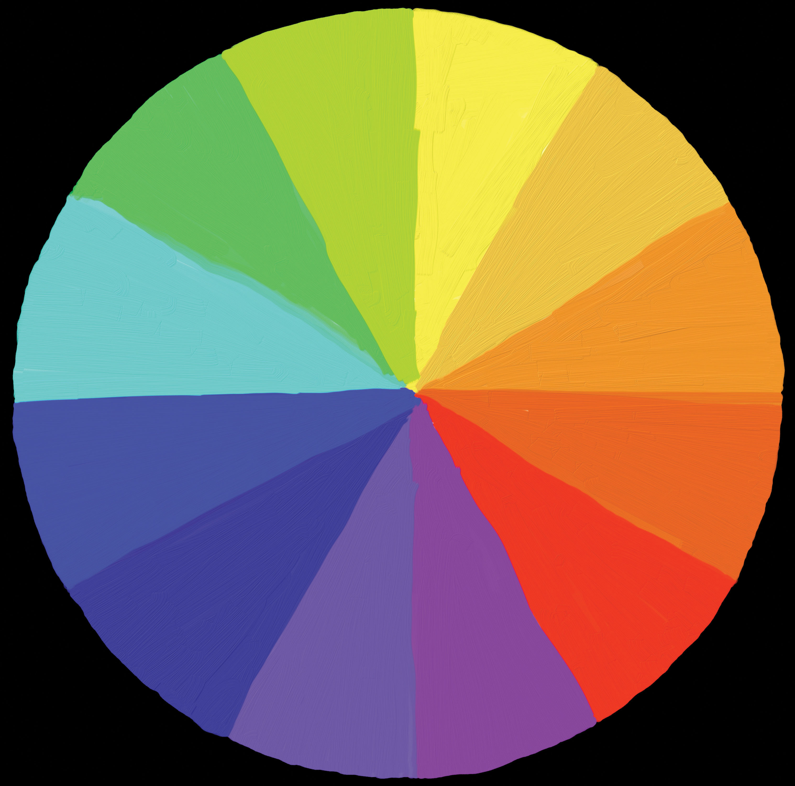Colors can be further referred to as warm or cool (Figure 9.10 "Warm (Orange) and Cool (Blue) Colors"). Warm colorsThe yellows and reds of the color spectrum associated with fire, heat, sun, and warmer temperatures. are those that might be seen during a bright, sunny day. Cool colorsThe greens and blues of the color spectrum associated with water, sky, ice, and cooler temperatures. are those associated with overcast days. Warm colors are typified by hues ranging from red to yellow, including browns and tans. Cool color hues range from blue-green through blue-violet and include the majority of gray variants. When used in mapping, it is wise to use warm and cool colors with care. Indeed, warm colors stand out, appear active, and stimulate the viewer. Cool colors appear small, recede, and calm the viewer. As you might guess, it is important that you apply warm colors to the map features of primary interest, while using cool colors on the secondary, background, and/or contextual features.
Figure 9.10 Warm (Orange) and Cool (Blue) Colors
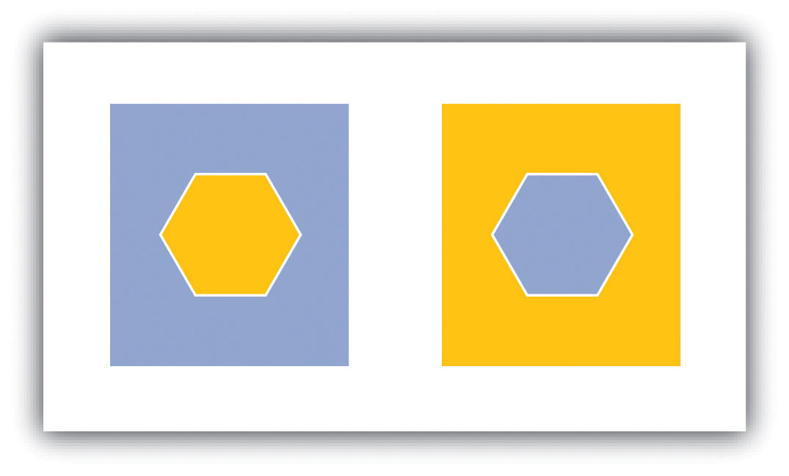Note that the warm color stands out, while the cool color recedes.
In light of the plethora of color schemes and options available, it is wise to follow some basic color usage guidelines. For example, changes in hue are best suited to visualizing qualitative data, while changes in value and saturation are effective at visualizing quantitative data. Likewise, variations in lightness and saturation are best suited to representing ordered data since these establish hierarchy among features. In particular, a monochromatic color scale is an effective way to represent the order of data whereby light colors represent smaller data values and dark colors represent larger values. Keep in mind that it is best to use more light shades than dark ones as the human eye can better discern lighter shades. Also, the number of coincident colors that can be distinguished by humans is around seven, so be careful not to abuse the color palette in your maps. If the data being mapped has a zero point, a dichromatic scale (Figure 9.11) provides a natural breaking point with increasing color values on each end of the scale representing increasing data values.
Figure 9.11
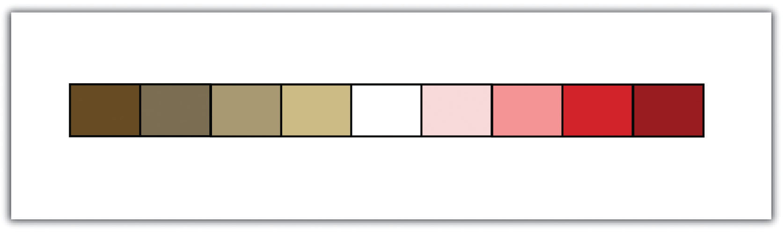A dichromatic scale is essentially two monochromatic scales joined by a low color value in the center.
In addition, darker colors result in more important or pronounced graphic features (assuming the background is not overly dark). Use dark colors on features whose visual impact you wish to magnify. Finally, do not use all the colors of the spectrum in a single map. It is best to leave such messy, rainbow-spectacular effects to the late Jackson Pollock and his abstract expressionist ilk.
While color is an integral variable when choosing how to best represent spatial data, making informed decisions on the size, shape, and type of symbols is equally important. Although raster data are restricted to symbolizing features as a single cell or as cell groupings, vector data allows for a vast array of options to symbolize points, lines, and polygons in a map. Like color, cartographers must take care to use symbols judiciously in order to most effectively communicate the meaning and purpose of the map to the viewer.
Vector points, lines, and polygons can be symbolized in a myriad of ways. The guidelines laid out in this section will help you to make informed decisions on how best to represent the features in your map. The primary visual variables associated with symbolization include size, texture, pattern, and shape (Figure 9.12 "Visual Variables"). Changes to symbol size and texture are most effectively used in conjunction with ordinal, interval, and ratio data. Changes to symbol pattern and shape are preferred in conjunction with nominal data.
Figure 9.12 Visual Variables
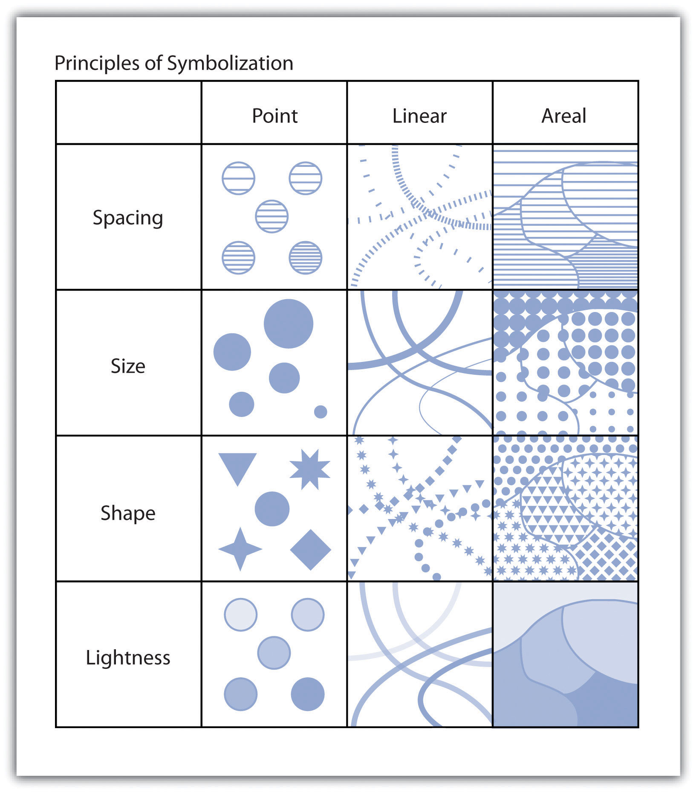Variations in the size of symbols are powerful indicators of feature importance. Intuitively, larger symbols are assumed to be more important than smaller symbols. Although symbol size is most commonly associated with point features, linear symbols can effectively be altered in size by adjusting line width. Polygon features can also benefit from resizing. Despite the fact that the area of the polygon can’t be changed, a point representing the centroidA point at the geometric center of a polygon. This can be used to represent a polygon as a point. of the polygon can be included in the map. These polygon centroids can be resized and symbolized as desired, just like any other point feature. Varying symbol size is moderately effective when applied to ordinal or numerical data but is ineffective with nominal data.
Symbol textureThe compactness of the marks that make up the symbol, also referred to as spacing., also referred to as spacing, refers to the compactness of the marks that make up the symbol. Points, lines, and polygons can be filled with horizontal hash marks, for instance. The closer these hash marks are spaced within the feature symbol, the more hierarchically important the feature will appear. Varying symbol texture is most effective when applied to ordinal or numerical data but is ineffective with nominal data.
Much like texture, symbols can be filled with different patterns. These patterns are typically some artistic abstraction that may or may not attempt to visualize real-world phenomena. For example, a land-use map may change the observed fill patterns of various land types to try to depict the dominant plants associated with each vegetation community. Changes to symbol patterns are most often associated with polygon features, although there is some limited utility in changing the fill patterns of points and lines. Varying symbol size is moderately effective when applied to ordinal or numerical data and is ineffective when applied to nominal data.
Altering symbol shape can have dramatic effects on the appearance of map features. Point symbols are most commonly symbolized with circles. Circles tend to be the default point symbol due to their unchanging orientation, compact shape, and viewer preference. Other geometric shapes can also constitute effective symbols due to their visual stability and conservation of map space. Unless specific conditions allow, volumetric symbols (spheres, cubes, etc.) should be used sparingly as they rarely contribute more than simple, two-dimensional symbols. In addition to geometric symbols, pictogramsA picture that represents a word or an idea by illustration. are useful representations of point features and can help to add artistic flair to a map. Pictograms should clearly denote features of interest and should not require interpretation by the viewer (Figure 9.13 "Pictograms"). Locales that frequently employ pictograms include picnic areas, camping sites, road signs, bathrooms, airports, and so forth. Varying symbol shape is most effective when applied to nominal data and is moderately effective with ordinal and nominal data.
Finally, applying variations in lightness/darkness will affect the hierarchical value of a symbol. The darker the symbol, the more it stands out among lighter features. Variations in the lightness/darkness of a symbol are most effective when applied to ordinal data, are moderately effective when applied to numerical data, and are ineffective when applied to nominal data.
Figure 9.13 Pictograms
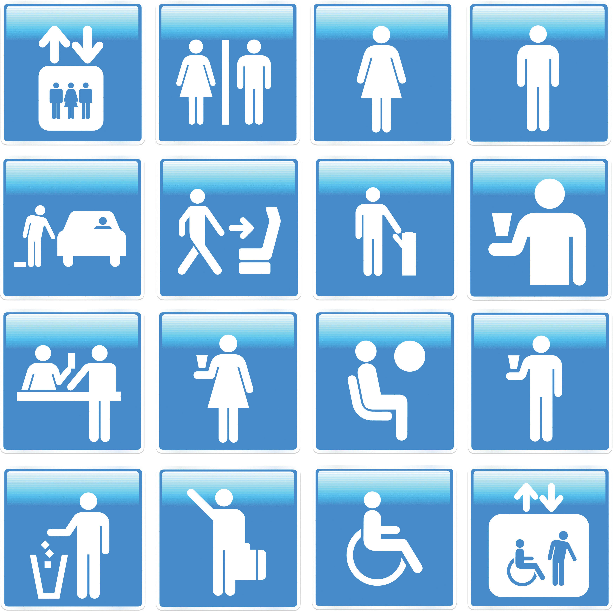Keep in mind that there are many other visual variables that can be employed in a map, depending on the cartographic software used. Regardless of the chosen symbology, it is important to maintain a logical relationship between the symbol and the data. Also, visual contrast between different mapped variables must be preserved. Indeed, the efficacy of your map will be greatly diminished if you do not ensure that its symbols are readily identifiable and look markedly different from each other.
In addition to the uniform symbols presented in the previous section, symbols for a single, quantitative variable can be sized proportionally to match the data values. These proportional symbolsSymbols whose size are directly related to the value of the data point being symbolized. are useful for presenting a fairly exact understanding of the differences in magnitude within a dataset. As the numeric values for each class increases, so too does the size of the symbol representing that class. This allows the symbol size of features to be directly related to the attribute values they represent whereby small points denote small data values and large points denote large data values.
Similar to proportional symbols, range gradedGrouping raw data into classes with each class represented by a differently sized symbol. symbols group raw data into classes with each class represented by a differently sized symbol. Both proportional and range graded symbols are most frequently used with point data, but lines and polygons can benefit from proportional symbolization as well. In the case of linear datasets, line width is most frequently used as the proportional visual variable. Polygon datasets typically summarize a quantitative variable within each polygon, place a centroid within that polygon, and proportion that centroid point symbol. Range grading should not be used if the data range for a given variable is small. In these cases, range grading will suggest larger differences in the data values than is merited.
The advantage of proportional symbolization is the ease with which the viewer can discriminate symbol size and thus understand variations in the data values over a given map extent. On the other hand, viewers may misjudge the magnitude of the proportional symbols if they do not pay close attention to the legend. In addition, the human eye does not see and interpret symbol size in absolute terms. When proportional circles are used in maps, it is typical that the viewer will underestimate the larger circles relative to the smaller circles. To address this potential pitfall, graduated symbols can be based on either mathematical or perceptual scaling. Mathematical scaling directly relates symbol size with the data value for that locale. If one value is twice as large as another, it will be represented with a symbol twice as large as the other. Perceptual scaling overcomes the underestimation of large symbols by making these symbols much larger than their actual value would indicate (Figure 9.14 "Mathematical versus Perceptual Scaling").
Figure 9.14 Mathematical versus Perceptual Scaling
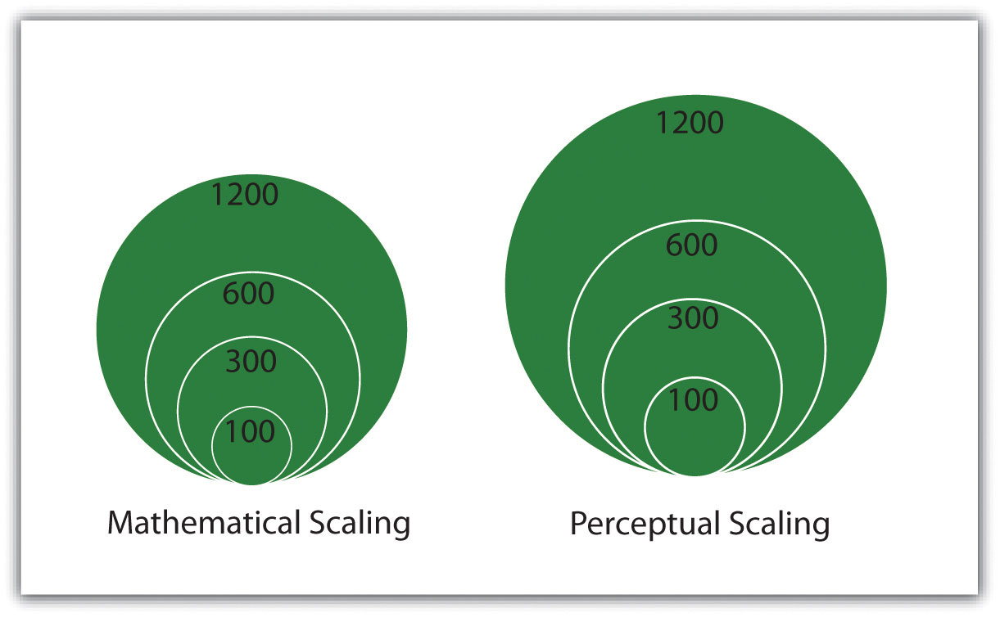A disadvantage of proportional symbolization is that the symbol size can appear variable depending on the surrounding symbols. This is best shown via the Ebbinghaus illusion (also known as Titchener circles). As you can see in Figure 9.15 "Ebbinghaus Illusion", the central circles are both the same size but appear different due to the visual influence of the surrounding circles. If you are creating a graphic with many different symbols, this illusion can wreak havoc on the interpretability of your map.
Figure 9.15 Ebbinghaus Illusion
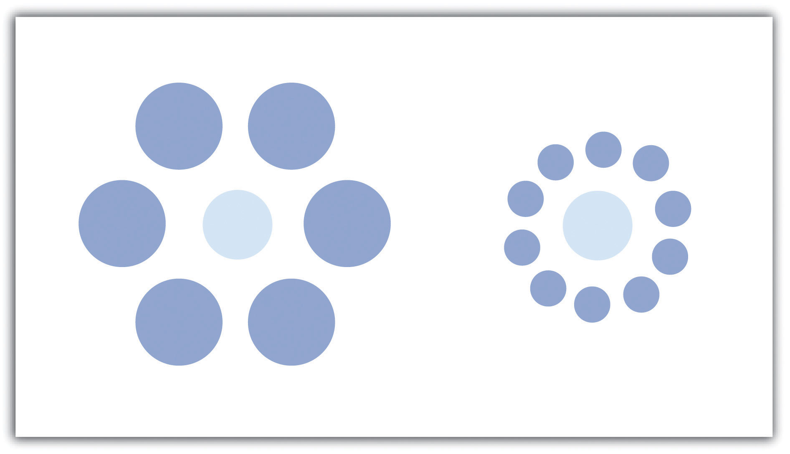In addition to effective use of colors and symbols, a map that is well designed will greatly enhance its ability to relate pertinent spatial information to the viewer. Judicious use of map elements, typography/labels, and design principles will result in maps that minimize confusion and maximize interpretability. Furthermore, the use of these components must be guided by a keen understanding of the map’s purpose, intended audience, topic, scale, and production/reproduction method.
Chapter 9 "Cartographic Principles", Section 9.1 "Color" and Section 9.2 "Symbology" discussed visual variables specific to the spatial features of a map. However, a map is composed of many more elements than just the spatial features, each of which contributes immensely to the interpretability and flow of the overall map. This section outlines the basic map elements that should be incorporated into a “complete” map. Following Slocum et al. (2005),Slocum, T., R. McMaster, F. Kessler, and H. Howard. 2005. Thematic Cartography and Geographic Visualization. 2nd ed. Upper Saddle River, NJ: Pearson Prentice Hall. these elements are listed in the logical order in which they should be placed into the map (Figure 9.16 "A US Map Showing Various Map Elements").
The first feature that should be placed into the map layout is the frame lineA bounding line that surrounds all the elements in the map.. This line is essentially a bordering box that surrounds all the map elements described hereafter. All of these map elements should be balanced within the frame line. To balance a map, ensure that neither large blank spaces nor jumbled masses of information are present within the map. Similar to frame lines are neat linesA bounding line that surrounds a single map element.. Neat lines are border boxes that are placed around individual map elements. By definition, neat lines must occur within the frame line. Both frame lines and neat lines are typically thin, black-lined boxes, but they can be altered to match the specific aesthetics of an individual map.
The mapped areaThe primary geographic component of the overall map. is the primary geographic component of the overall map. The mapped area contains all of the features and symbols used to represent the spatial phenomena being displayed. The mapped area is typically bordered with a neat line.
InsetsA map within a map. can be thought of as secondary map areas, each encased within their own neat line. These neat lines should be of different thickness or type than other line features on the map to adequately demarcate them from other map features. Insets often display the primary mapped area in relation to a larger area. For example, if the primary map shows the locales of national parks with a county, an inset displaying the location of that county within the larger state boundary may be included. Conversely, insets are also used to display areas related to the primary map but that occur at some far off locale. This type of inset is often used with maps of the United States whereby Alaska and Hawaii are placed as insets to a map of the contiguous United States. Finally, insets can be used to clarify areas where features would otherwise be overcrowded if restricted to the primary mapping area. If the county map of national parks contained four small, adjacent parks, an inset could be used to expand that jumbled portion of the map to show the exact spatial extent of each of the four parks. This type of inset is frequently seen when showing the small northeastern states on a map of the entire United States.
All maps should have a titleA map header that provides an overall descriptor of the map’s purpose.. The title is one of the first map elements to catch the viewer’s eye, so care should be taken to most effectively represent the intent of the map with this leading text. The title should clearly and concisely explain the purpose of the map and should specifically target the intended viewing audience. When overly verbose or cryptically abbreviated, a poor title will detract immensely from the interpretability of the cartographic end-product. The title should contain the largest type on the map and be limited to one line, if possible. It should be placed at the top-center of the map unless there is a specific reason otherwise. An alternate locale for the title is directly above the legend.
The legendA map element that describes the colors and symbols found on the map. provides a self-explanatory definition for all symbols used within the mapped area. Care must be taken when developing this map element, as a multitude of features within a dataset can lead to an overly complex legend. Although placement of the legend is variable, it should be placed within the white space of the map and not in such a way that it masks any other map elements. Atop the legend box is the optional legend header. The legend header should not simply repeat the information from the title, nor should it include extraneous, non-legend-specific information. The symbols representing mapped features should be to the left of the explanatory text. Placing a neat line around the legend will help to bring attention to the element and is recommended but not required. Be careful not to take up too much of the map with the legend, while also not making the legend so small that it becomes difficult to read or that symbols become cluttered. Removing information related to base map features (e.g., state boundaries on a US map) or readily identifiable features (e.g., highway or interstate symbols) is one effective way to minimize legend size. If a large legend is unavoidable, it is acceptable to place this feature outside of the map’s frame line.
Attribution of the data sourceA map element that provides an attribution describing where the data can be found. within the map allows users to assess from where the data are derived. Stylistically, the data source attribution should be hierarchically minimized by using a relatively small, simple font. It is also helpful to preface this map element with “Source:” to avoid confusion with other typographic elements.
An indicator of scaleA map element that describes the map dimensions. is invaluable to provide viewers with the means to properly adjudicate the dimensions of the map. While not as important when mapping large or widely familiar locales such as a country or continent, the scale element allows viewers to measure distances on the map. The three primary representations of scale are the representational fraction, verbal scale, and bar scale (for more, see Chapter 2 "Map Anatomy", Section 2.1 "Maps and Map Types"). The scale indicator should not be prominently displayed within the map as this element is of secondary importance.
Finally, map orientationA map elements that notifies the viewer of the directionality of the map. notifies the viewer of the direction of the map. To assist in clarifying orientation, a graticuleA series of grid lines representing latitude and longitude. can also be included in the mapped area. Most maps are made such that the top of the page points to the north (i.e., a north-up map). If your map is not north-up, there should be a good reason for it. Orientation is most often indicated with a north arrow, of which there are many stylistic options available in current geographic information system (GIS) software packages. One of the most commonly encountered map errors is the use of an overly large or overly ornate north arrow. North arrows should be fairly inconspicuous as they only need to be viewed once by the reader. Ornate north arrows can be used on small scale maps, but simple north arrows are preferred on medium to large-scale maps so as to not detract from the presumably more important information appearing elsewhere.
Taken together, these map elements should work together to achieve the goal of a clear, ordered, balanced, and unified map product. Since modern GIS packages allow users to add and remove these graphic elements with little effort, care must be taken to avoid the inclination to employ these components with as little forethought as it takes to create them. The following sections provide further guidance on composing these elements on the page to honor and balance the mapped area.
Figure 9.16 A US Map Showing Various Map Elements
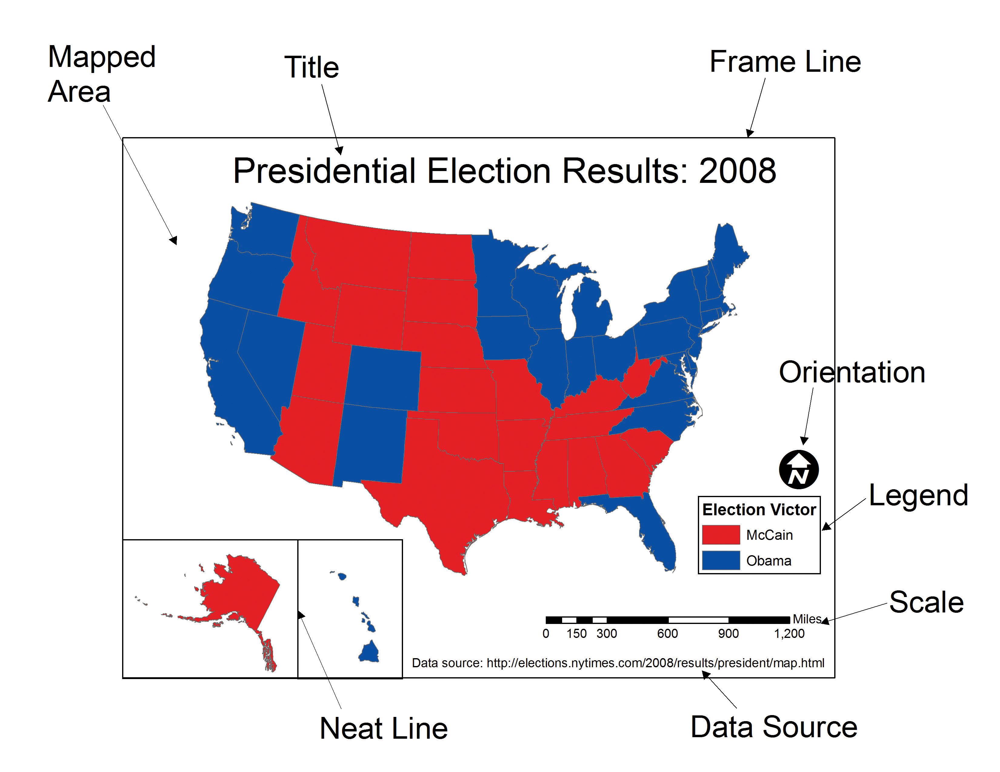Type is found throughout all the elements of a map. Type is similar to map symbols in many senses. Coloring effects alter typographic hierarchy as lighter type fades into the background and dark type jumps to the fore. Using all uppercase letters and/or bolded letters will result in more pronounced textual effects. Larger font sizes increase the hierarchical weight of the type, so ensure that the size of the type corresponds with the importance of the map feature. Use decorative fonts, bold, and italics sparingly. These fonts, as well as overly small fonts, can be difficult to read if overused. Most importantly, always spell check your final cartographic product. After spell checking, spell check again. Yu wont reegrett teh ecstra efort.
Other typographic options for altering text include the use of serifA typeface in which each character has small strokes at the ends of the lines that form it. Serifs are found in typestyles such as Times New Roman, Palatino, Garamond, and Baskerville., sans serif, and display fonts. While the use of serif fonts are preferred in written documents to provide horizontal guidelines, either is acceptable in a mapping application (Slocum 2005).Slocum, T., R. McMaster, F. Kessler, and H. Howard. 2005. Thematic Cartography and Geographic Visualization. 2nd ed. Upper Saddle River, NJ: Pearson Prentice Hall. Sans serif fonts, on the other hand, are preferred for maps that are viewed over the Internet.
KerningA typographic effect that alters the space between adjacent letters in a word. is an effective typographic effect that alters the space between adjacent letters in a word. Decreasing the kerning of a typeset is useful if the text is too large for the space given. Alternatively, increasing the kerning is an effective way to label large map areas, particularly in conjunction with all-uppercase lettering. Like kerning, changes in leadingA typographic effect that alters the vertical distance between lines of text. (pronounced “led-ing”) alter the vertical distance between lines of text. Leading should not be so cramped that lines of text begin to overwrite each other, nor should it be so wide that lines of text appear unrelated. Other common typographic effects include masks, callouts, shadows, and halos (Figure 9.17 "Typographic Effects"). All of these effects serve to increase the visibility and importance of the text to which they are applied.
Figure 9.17 Typographic Effects
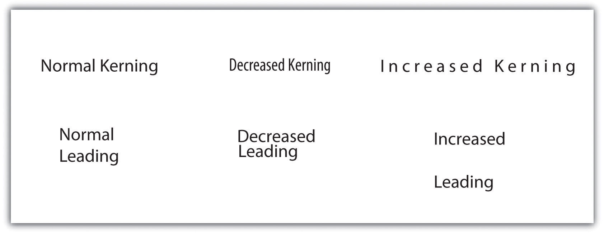In addition to the general typographic guidelines discussed earlier, there are specific typographic suggestions for feature labelsText on a map that describes and defines mapped features.. Obviously, labels must be placed proximal to their symbols so they are directly and readily associated with the features they describe. Labels should maintain a consistent orientation throughout so the reader does not have to rubberneck about to read various entries. Also, avoid overprinting labels on top of other graphics or typographic features. If that is not possible, consider using a halo, mask, callout, or shadow to help the text stand out from the background. In the case of maps with many symbols, be sure that no features intervene between a symbol and its label.
Some typographic guidelines are specific to labels for point, line, and polygon features. Point labels, for example, should not employ exaggerated kerning or leading. If leader linesA thin line that ties a label to the symbol it describes. are used, they should not touch the point symbol nor should they include arrow heads. Leader lines should always be represented with consistent color and line thickness throughout the map extent. Lastly, point labels should be placed within the larger polygon in which they reside. For example, if the cities of Illinois were being mapped as points atop a state polygon layer, the label for the Chicago point symbol should occur entirely over land, and not reach into Lake Michigan. As this feature is located entirely on land, so should its label.
Line labels should be placed above their associated features but should not touch them. If the linear feature is complex and meandering, the label should follow the general trend of the feature and not attempt to match the alignment of each twist and turn. If the linear feature is particularly long, the feature can be labeled multiple times across its length. Line labels should always read from left to right.
Polygon labels should be placed within the center of the feature whenever possible. If increased emphasis is desired, all-uppercase letters can be effective. If all-uppercase letters are used, exaggerated kerning and leading is also appropriate to increase the hierarchical importance of the feature. If the polygon feature is too small to include text, label the feature as if it were a point symbol. Unlike point labels, however, leader lines should just enter into the feature.
Map design is a complex process that provides many variables and choices to the cartographer. The British Cartographic Society Design Group presented five “Principles of Cartographic Design” on their listserv on November 26, 1999. These principles, and a brief summary of each, are as follows:
It should become increasingly clear that the cartographic choices made during the mapping process have as much influence on the interpretation of a map as does the data being mapped. Borrowing liberally from the popularized Mark Twain quote, it could be said that, “There are three kinds of lies: lies, damned lies, and maps.” Mapmakers, indeed, have the ability to use (or misuse) cartographic principles to represent (or misrepresent) the spatial data at their disposal. It is now up to you, the cartographer, to master the tools presented in this book to harness the power of maps to elucidate and address the spatial issues with which you are confronted.